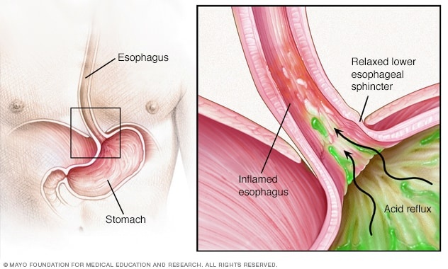

Gastroesophageal Reflux Disease (GERD)

SYMPTOMS:
Common signs and symptoms of GERD include:
- A burning sensation in your chest (heartburn), usually after eating, which might be worse at night
-
Chest pain
-
Difficulty swallowing
-
Regurgitation of food or sour liquid
-
Sensation of a lump in your throat
If you have nighttime acid reflux, you might also experience:
- Chronic cough
-
Laryngitis
-
New or worsening asthma
-
Disrupted sleep
CAUSES:
- GERD is caused by frequent acid reflux.
-
When you swallow, a circular band of muscle around the bottom of your esophagus (lower esophageal sphincter) relaxes to allow food and liquid to flow into your stomach. Then the sphincter closes again.
-
If the sphincter relaxes abnormally or weakens, stomach acid can flow back up into your esophagus. This constant backwash of acid irritates the lining of your esophagus, often causing it to become inflamed.
DIAGNOSIS:
- Upper endoscopy. Your doctor inserts a thin, flexible tube equipped with a light and camera (endoscope) down your throat, to examine the inside of your esophagus and stomach. Test results can often be normal when reflux is present, but an endoscopy may detect inflammation of the esophagus (esophagitis) or other complications. An endoscopy can also be used to collect a sample of tissue (biopsy) to be tested for complications such as Barrett's esophagus.
-
Ambulatory acid (pH) probe test. A monitor is placed in your esophagus to identify when, and for how long, stomach acid regurgitates there. The monitor connects to a small computer that you wear around your waist or with a strap over your shoulder. The monitor might be a thin, flexible tube (catheter) that's threaded through your nose into your esophagus, or a clip that's placed in your esophagus during an endoscopy and that gets passed into your stool after about two days.
-
Esophageal manometry. This test measures the rhythmic muscle contractions in your esophagus when you swallow. Esophageal manometry also measures the coordination and force exerted by the muscles of your esophagus.
-
X-ray of your upper digestive system. X-rays are taken after you drink a chalky liquid that coats and fills the inside lining of your digestive tract. The coating allows your doctor to see a silhouette of your esophagus, stomach and upper intestine. You may also be asked to swallow a barium pill that can help diagnose a narrowing of the esophagus that may interfere with swallowing.
TREATMENT
- Your doctor is likely to recommend that you first try lifestyle modifications and over-the-counter medications. If you don't experience relief within a few weeks, your doctor might recommend prescription medication or surgery.